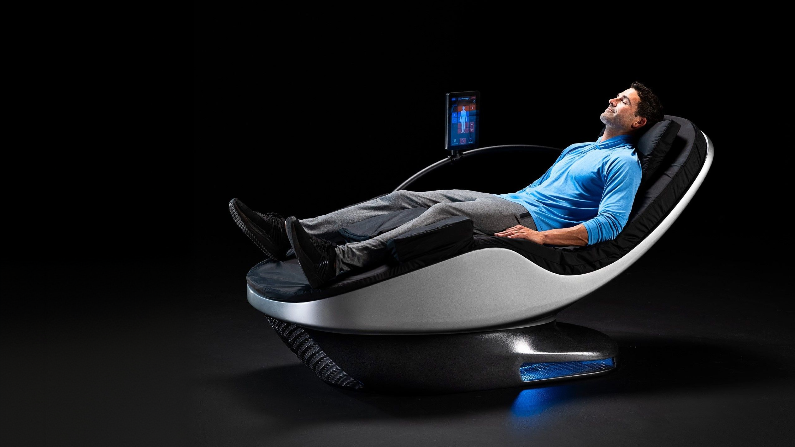
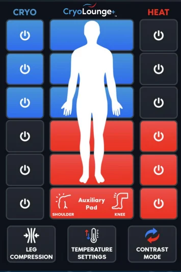
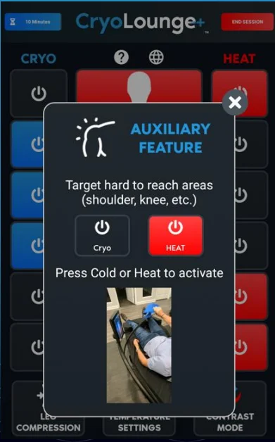
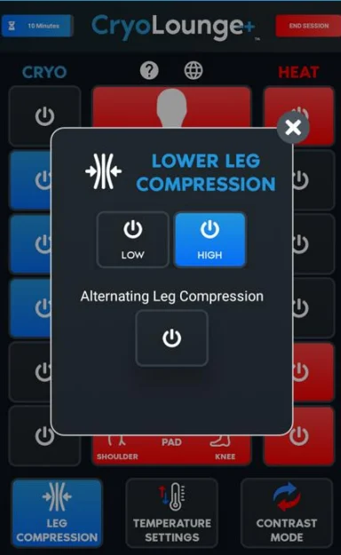
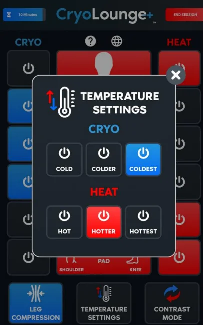
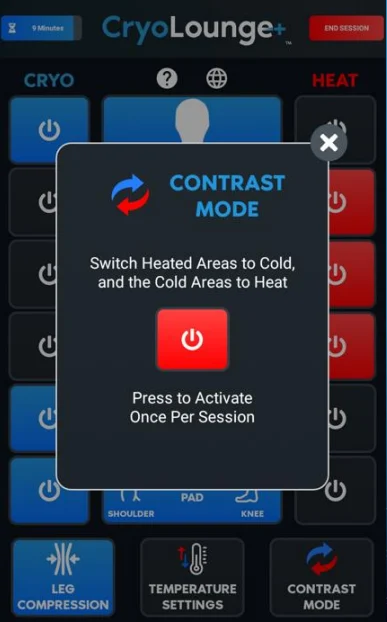

01
Provides a 'comfortable cold' experience
Uses targeted cooling with optional heat to keep recovery comfortable.

Advanced recovery chair for targeted cold
Targeted cold and heat zones help soothe sore areas, ease everyday aches, and support post-workout recovery.
Recommended CryoLounge session:
15 minutesCryoLounge sessions combine targeted cold, heat, and compression to help you recover comfortably.
Uses targeted cooling with optional heat to keep recovery comfortable.
Helps calm sore areas and supports recovery after training.
Soothes tired muscles and helps ease minor aches after activity.
Provides targeted temperature therapy without ice packs or heating pads.

Enter the number on your keytag after WOA
Provide cold or heat. Up to 4 zones can be all heat or all cold at once. Speed is adjustable.
Set it cold for the zones where you have soreness, aches, and pains and then turn the other zones hot. Then enjoy!
Don't flip the zones too much. Wait until Contrast Mode at the end.
Choose a program, let the chair scan your body, then adjust intensity as needed.

Auxiliary pads for hard to reach areas, such as shoulders, knees, or to drape over abdomen.

Offers a lower leg and calf massage with varying levels of
intensity.
Options include Low, High,
Alternating Compression, or No Compression.

Cold temperatures vary from 25°F - 40°F.
Heat temperatures vary from 85°F - 100°F.

Around minute 10-12, select Contrast Mode to heat colder areas and
cool down hot areas.
Use once per 15-minute session.